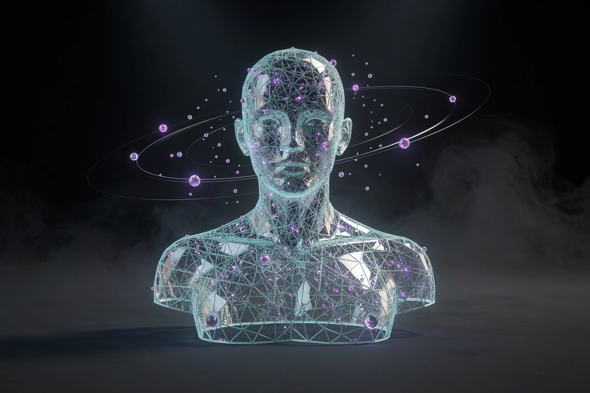

Tokenise
Text becomes pieces. “Unbelievable” might arrive as three tokens. Everything downstream is arithmetic on those pieces.
- vocabulary
- subwords
- context window
Every week the frontier moves and the fundamentals don't. This is both, in one place: the models that matter, the benchmarks with their source dates attached, the economics nobody puts on a slide, and the harness that decides whether any of it survives production.
Generative AI does not look anything up. It has read an enormous amount of text, images and audio, compressed the patterns into weights, and now predicts what should come next. Everything strange about these systems follows from that one sentence.
A chat box is one interface on top of a probability machine. Prompting is how you steer the guess.
When you type a prompt, the model turns your words into tokens, converts each token into a vector of numbers, and lets every token look at the others to decide what the context means. Then it samples the next token. Repeat a thousand times and you have an essay, a JSON object, or a working function.
This is why the same question gets different answers, why confident prose is not evidence, and why "hallucination" is not a bug to be patched out. The system is optimised to continue plausibly. Your job is to make the plausible thing the correct thing — with context, constraints, tools, and a check that can fail.
Type anything below. We split it the way a model would see it, show which tokens the last one attends to, and rank what it would say next. The probabilities are illustrative; the mechanics are real.
Illustrative tokenisation and attention. Production tokenizers use subword vocabularies of 100k+ entries, and real attention has many heads across dozens of layers. The point is the shape of the computation, not the numbers.
Text becomes pieces. “Unbelievable” might arrive as three tokens. Everything downstream is arithmetic on those pieces.
Each token becomes a vector. Attention lets every token weigh every other token, which is how “it” finds its noun.
The model scores every possible next token, then picks one. Temperature decides how adventurous that pick is.
The frontier reset three times this year: Claude Opus 5 in July, the GPT-6 family in September, Gemini 4 Argon in October. Prices fell faster than capability rose. Prices below are launch numbers per million tokens, and they move.
Launch pricing from vendor announcements and secondary trackers, Oct 2026. Where a price is not published for an open-weight model we show a dash rather than invent one. Always re-check before you budget.
A score without a date is a rumour. Every board below carries the snapshot it came from — and note how often the leader is not the model with the biggest launch.
Vendors publish their own numbers under their own settings; we prefer third-party snapshots where they exist. Differences of a point or two are usually noise. Differences of ten are a product decision.
Both things are true at once. The price of a competent token collapsed by half twice this year, while the five biggest cloud builders committed the largest infrastructure budget in history.
Microsoft, Alphabet, Amazon, Meta and Oracle, nearly double 2025. About three quarters of it is AI infrastructure.
Sol and Luna launched at half the promotional price of the GPT-5.6 models they replaced. Capability up, price down.
Cheaper per typical workload than Opus 5, with cache reads down sixty percent. The saving is in reuse, not in the headline rate.
The number that matters is not dollars per token. It is dollars per finished task.
On Zapier's AutomationBench, GPT-6 Sol at maximum effort scored 33.2% for $0.27 a task. Claude Opus 5 scored 26.9% for about eleven times that. Anthropic's counter is efficiency rather than list price: Opus 5.5 beat GPT-6 Astra on FrontierCode at roughly a fifth of the cost per task.
Both claims can be true because they measure different work. Which means the only benchmark that matters for your budget is your own eval, run on your own traces, with the cost column filled in.
Sources: OpenAI GPT-6 Sol/Luna launch (22 Sep 2026) · Anthropic Opus 5.5 model card (22 Sep 2026) · Futurum Group capex estimate (2026). Cost-per-task figures are vendor-reported.
Every serious team arrived at the same conclusion this year: swapping the harness moves results more than swapping the model. Context, tools, memory, verification, isolation and spend limits — that is where the work actually lives.
What the model can see right now. Retrieval that reasons across documents, not chunks stuffed into a window.
Typed, narrow, permissioned. Every tool is an attack surface and a billing event.
What survives the turn. Long-lived tokens are how one chat agent leaked CRM data from seven hundred companies.
A check that can fail. Fresh sessions scored against a contract beat self-review every time.
MicroVMs, credential proxies, kernel boundaries. Prompt guardrails fold when the request is reframed.
Identity and budget limits where a prompt cannot move them. Agentic workloads are mostly input and cache.

From Katha, 12 October 2026“An agent told a customer the refund had gone through. The tool was never called. Latency and error metrics stayed green.”
The ideas are old; the compounding is new. Drag the rail to follow the line from a question about imitation to a model that can run your terminal.
Turing asks whether a machine can hold a conversation indistinguishable from a person. The test is about behaviour, not understanding.
The term “artificial intelligence” is coined. The founding bet: every feature of intelligence can be described precisely enough to be simulated.
Pattern matching dressed as empathy. People confide in it anyway — the first lesson that fluency is not comprehension.
Errors flow backwards through a network and adjust the weights. The training algorithm under every model you use today.
A machine beats the world chess champion with search, not learning. Expertise can be brute-forced inside a closed board.
Two GPUs and a deep net demolish ImageNet. The hardware era of AI starts here, not in 2022.
The transformer drops recurrence for attention. Every frontier model since is a descendant of this paper.
175B parameters and in-context learning. The prompt becomes a programming interface.
Thirty days that put generation in everyone's hands. Images and words stop being scarce skills.
Multimodal reasoning arrives; Llama makes weights a strategy. Enterprises start writing AI policies.
Models learn to think before answering, and Anthropic publishes a protocol that lets them use tools consistently.
Models stop chatting and start editing repositories. The unit of work becomes the delegated task.
Three frontier resets in nine months, a 50% price cut, one-million-token contexts, and agents that run for hours. The model becomes the cheap part.
Verification, containment and cost per finished task. The next moat is evidence that the thing actually did the work.
Six skills, roughly in order of return. The lab in this site exists so you can practise four of them without an API key.
Write the contract: role, task, constraints, output shape, and one example of good. Most “bad model” complaints are bad instructions.
Retrieval, chunking, graph structure for multi-hop questions. The window is big now; attention is still finite.
Narrow functions with typed inputs, explicit failure modes, and an audit trail. A tool call is a permission slip.
Build the eval before the feature. Score against a private holdout, fail the run when the tool was never called.
MicroVMs, scoped credentials, spend ceilings, and a kill switch that does not depend on the model cooperating.
Latency budgets, streaming, caching, and a cost dashboard a finance team can read. Then measure the task, not the token.
Katha reads every video and podcast from eight AI channels, then writes the weekly issue that ties them together. No hot takes, no listicles — one through-line, three things that changed, and the stories that prove it.
Katha Weekly lands with the issue: the through-line, the three things that actually changed, and a builder's action you can run on Monday. Free, no drip sequence, unsubscribe in one click.